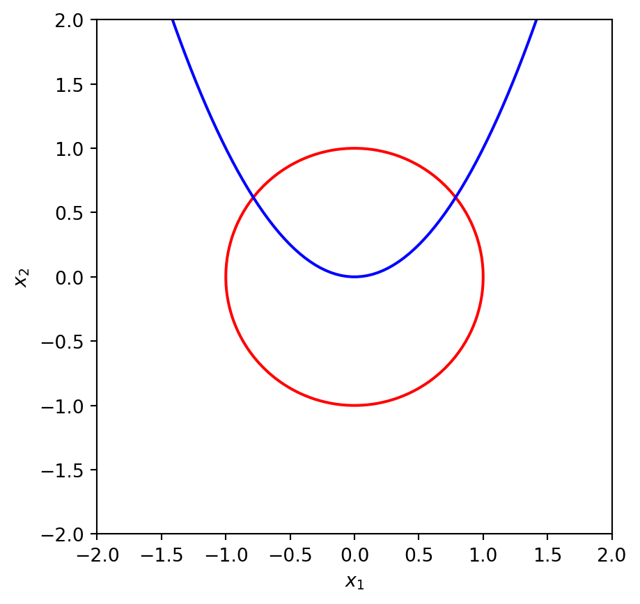

So far, we considered the root of one equation in one variable \(x\). In applications, one often meets systems of several equations in several variables.
4.1 Defining the problem
Let \(\mathbf{f}: \mathbb{R}^m \to \mathbb{R}^m\) be given. The root finding problem is that of finding the solution \(\mathbf{x}\in\mathbb{R}^m\) such that \[
\mathbf{f}(\mathbf{x})=\mathbf{0} \ \ \hbox{or} \ \
\left\{
\begin{array}{l}
f_{1}(x_{1},\dots,x_{m})=0 \\
f_{2}(x_{1},\dots,x_{m})=0 \\
\vdots \\
f_{m}(x_{1},\dots,x_{m})=0
\end{array}
\right.
\tag{4.1}\] This is a system of \(m\) (linear or nonlinear) equations for \(m\) unknowns \(x_1,\dots,x_m\).
Example 4.1 Let \(m=2\) and \[
\mathbf{f}(\mathbf{x})=
\begin{pmatrix}
f_1(x_1,x_2) \\
f_2(x_1,x_2)
\end{pmatrix}
= \begin{pmatrix}
x_1^2 + x_2^2 -1 \\
x_2 - x_1^2
\end{pmatrix}.
\tag{4.2}\] Then we have the system of two equations \[
\left\{
\begin{array}{l}
x_1^2 + x_2^2 -1=0 \\
x_2 - x_1^2=0
\end{array}
\right..
\tag{4.3}\] This system has a simple geometrical interpretation (see Figure 4.1).
Code
import numpy as npimport matplotlib.pyplot as plt# Make a 2d plot of the two equationsx1 = np.linspace(-2, 2, 100)x2 = np.linspace(-2, 2, 100)X1, X2 = np.meshgrid(x1, x2)F1 = X1**2+ X2**2-1F2 = X2 - X1**2plt.contour(X1, X2, F1, [0], colors='r')plt.contour(X1, X2, F2, [0], colors='b')plt.xlabel('$x_1$')plt.ylabel('$x_2$')plt.gca().set_aspect('equal', adjustable='box')plt.show()

Figure 4.1: The two equations \(x_1^2 + x_2^2 -1=0\) and \(x_2 - x_1^2=0\). The solutions of this system are the intersection points of the parabola with the circle.
Points \((x_1,x_2)\) satisfying the first equation lie on the unit circle, while the second equation gives us the parabola. The solution of this system is represented by the two intersection points of the parabola with the circle in Figure 4.1.
As in the example above, the solutions of a system with \(m\) equations and \(m\) variables are typically (though not always) discrete points; and there can be more than one solution. In this simple example, one can find the intersection points of the curves explicitly (try it!), and therefore compute the solutions of the system. In general, however, this will not be possible, and we will need approximation methods.
4.2 Vector and matrix norms
Definition 4.1 (Norm of a vector) A function \(\Vert\, \cdot\, \Vert : \mathbb{R}^m \to \mathbb{R}\) is a vector norm if it has the following properties:
(i)) \(\Vert\mathbf{x}\Vert \geq 0\) for all \(\mathbf{x}\in\mathbb{R}^{m}\) and \(\Vert\mathbf{x}\Vert = 0\)\(\Leftrightarrow\)\(\mathbf{x}=0\) (i.e. \(\mathbf{x}=(0, 0, ... , 0)^{t}\)),
\(\Vert\alpha\mathbf{x}\Vert = \vert\alpha\vert\cdot\Vert\mathbf{x}\Vert\) for all \(\alpha\in\mathbb{R}\) and \(\mathbf{x}\in\mathbb{R}^{m}\),
\(\Vert\mathbf{x}+\mathbf{y} \Vert \leq \Vert\mathbf{x}\Vert + \Vert\mathbf{y}\Vert\) for all \(\mathbf{x}, \mathbf{y}\in\mathbb{R}^{m}\) (the triangle inequality).
Example 4.2 The \(l_{2}\) and \(l_{\infty}\) norms of the vector \(\mathbf{x}=(x_{1}, x_{2}, ..., x_{m})^{t}\) are defined by \[
\Vert\mathbf{x}\Vert_{2}=\left(\sum_{i=1}^{m}x_{i}^{2}\right)^{1/2}
\ \ \ \text{ and } \ \ \
\Vert\mathbf{x}\Vert_{\infty}=\max_{1\leq i \leq m}\vert x_{i}\vert .
\tag{4.4}\] The \(l_{2}\) norm is called the Euclidean norm of the vector \(\mathbf{x}\). It represents the notion of distance from the origin to the point \(\mathbf{x}\) (the length of the straight line joining the points \(0\) and \(\mathbf{x}\)).
Definition 4.2 The distance between any two points \(\mathbf{x}\in \mathbb{R}^{m}\) and \(\mathbf{y}\in \mathbb{R}^{m}\) is defined as the norm of the difference of the vectors: \(\Vert \mathbf{x}-\mathbf{y}\Vert\).
Definition 4.3 A sequence \(\{\mathbf{x}^{(k)}\}\) of vectors in \(\mathbb{R}^{m}\)converges to \(\mathbf{x}\) with respect to the norm \(\Vert \, \cdot \, \Vert\) if for any \(\epsilon >0\), there exists an integer \(N(\epsilon)\) such that \[
\Vert \mathbf{x}^{(k)}-\mathbf{x}\Vert <\epsilon \ \ \ \ \text{ for \ all } \ \ \
k > N(\epsilon).
\tag{4.5}\] In other words, \(\mathbf{x}^{(k)}\to \mathbf{x}\) as \(k\to\infty\) if \(\Vert \mathbf{x}^{(k)}-\mathbf{x}\Vert\to 0\) as \(k\to\infty\).
Remark. It can be shown that all norms on \(\mathbb{R}^{m}\) are equivalent with respect to convergence. This means that if \(\Vert \, \cdot \, \Vert\) and \(\Vert \, \cdot \, \Vert^{\prime}\) are two norms on \(\mathbb{R}^{m}\) and \(\{\mathbf{x}^{(k)}\}\) converges to \(\mathbf{x}\) with respect to the norm \(\Vert \, \cdot \, \Vert\), then \(\{\mathbf{x}^{(k)}\}\) also converges to \(\mathbf{x}\) with respect to the norm \(\Vert \, \cdot \, \Vert^{\prime}\). (Proof of this fact for the case of \(l_{2}\) and \(l_{\infty}\) norms follows from the inequality \(\Vert \mathbf{x}\Vert_{\infty}\leq \Vert \mathbf{x}\Vert_{2}\leq \sqrt{m}\Vert \mathbf{x}\Vert_{\infty}\) which is valid for all \(\mathbf{x}\in \mathbb{R}^{m}\).)
Let \({\cal M}(m,m)\) be the space of all \(m\times m\) real matrices.
Definition 4.4 (Norm of a matrix) A function \(\Vert \, \cdot \, \Vert: {\cal M}(m,m) \to \mathbb{R}\) is a matrix norm if it has the following properties:
\(\Vert A \Vert \geq 0\) and \(\Vert A \Vert = 0\)\(\Leftrightarrow\)\(A=O\) (where \(O\) is the matrix with all zero entries),
\(\Vert\alpha A \Vert = \vert\alpha\vert\cdot\Vert A \Vert\),
\(\Vert A+B \Vert \leq \Vert A \Vert + \Vert B\Vert\) (the triangle inequality),
\(\Vert AB \Vert \leq \Vert A \Vert \cdot \Vert B\Vert\).
where \(A\) and \(B\) are any \(m\times m\) real matrices, and \(\alpha\) is any real number.
A distance between matrices \(A\) and \(B\) (with respect to this matrix norm) is \(\Vert A-B \Vert\).
Definition 4.5 (Natural, or induced, matrix norm) If \(\Vert \, \cdot \, \Vert\) is a vector norm on \(\mathbb{R}^{m}\), then \[
\Vert A \Vert=\max_{\Vert\mathbf{x}\Vert =1}\Vert A\mathbf{x}\Vert
\tag{4.6}\] is a matrix norm (called natural, or induced, matrix norm associated with the vector norm).
In what follows we shall consider only \(l_{\infty}\) matrix norms: \[
\Vert A \Vert_{\infty}=\max_{\Vert\mathbf{x}\Vert_{\infty} =1}\Vert A\mathbf{x}\Vert_{\infty}.
\tag{4.7}\]
Theorem 4.1 For any \(m\times m\) matrix \(A=(a_{ij})\), \[
\Vert A \Vert_{\infty}=\max_{1\leq i\leq m}\left\{\sum_{j=1}^{m}
\vert a_{ij}\vert\right\}.
\tag{4.8}\]
Example 4.3 Let \[
A=\left[
\begin{array}{cccc}
1 &2 &0 &-1 \\
1 &3 &2 &0 \\
0 &-2 &3 &2 \\
1 &2 &2 &1
\end{array}
\right], \quad \quad
B=\left[
\begin{array}{cccc}
2 &2 &-3 \\
1 &3 &2 \\
-3 &-2 &2
\end{array}
\right].
\tag{4.9}\] Then, according to Eq. 4.8, Evidently, \(\Vert A \Vert_{\infty}=\max \{4, 6, 7, 6\}=7\) and \(\Vert B \Vert_{\infty}=\max \{7, 6, 7 \}=7\).
Later we will need the following important property of a natural matrix norm.
Theorem 4.2 For any \(\mathbf{x}\neq 0\), any matrix \(A\), and any natural norm \(\Vert \, \cdot \, \Vert\), \[
\Vert A\mathbf{x}\Vert \leq \Vert A\Vert \cdot
\Vert \mathbf{x}\Vert.
\tag{4.10}\]
Proof. The proof is very easy: \[
\frac{\Vert A\mathbf{x}\Vert}{\Vert \mathbf{x}\Vert} = \left\Vert A \frac{\mathbf{x}}{\Vert \mathbf{x}\Vert}\right\Vert \leq \max_{\Vert \mathbf{y}\Vert=1}\Vert A\mathbf{y}\Vert = \Vert A \Vert
\ \ \Rightarrow \ \ \Vert A\mathbf{x}\Vert \leq \Vert A\Vert \cdot
\Vert \mathbf{x}\Vert.
\tag{4.11}\] Here we have used the relevant properties of the vector norm and the definition of the natural matrix norm.
Remark. For any natural norm, the above theorem implies property (iv) in the definition of the matrix norm. Indeed, for any \(\mathbf{x}\neq 0\) we have \[
\Vert AB\mathbf{x}\Vert \leq \Vert A\Vert \, \Vert B\mathbf{x}\Vert \leq \Vert A\Vert \, \Vert B \Vert \, \Vert \mathbf{x}\Vert
\tag{4.12}\] and \[
\left\Vert AB \, \frac{\mathbf{x}}{\Vert \mathbf{x}\Vert} \right\Vert \leq \Vert A\Vert \, \Vert B \Vert .
\tag{4.13}\] Since the last inequality is valid for all \(\mathbf{x}\neq 0\), it implies that \[
\Vert AB \Vert = \max_{\Vert \mathbf{y}\Vert = 1}\left\Vert AB \mathbf{y}\right\Vert \leq \Vert A\Vert \, \Vert B \Vert.
\tag{4.14}\]
4.3 Fixed point iteration for vectors
We already know that, in the case of functions of one variable, the root finding problem \(f(x)=0\) can be reformulated as a fixed point problem \(g(x)=x\). The same is true for systems of nonlinear equations: \(\mathbf{f}(\mathbf{x})=\mathbf{0}\) can be rewritten as \(\mathbf{g}(\mathbf{x})=\mathbf{x}\) in infinitely many ways, for example with \(\mathbf{g}(\mathbf{x})=\mathbf{x}-\lambda \mathbf{f}(\mathbf{x})\) for any nonzero constant \(\lambda\).
Now we consider the fixed point problem for vectors. Given a function \(\mathbf{g}: \mathbb{R}^m \to \mathbb{R}^m\), the problem is to find a point \(\mathbf{x}\in \mathbb{R}^m\) such that \[
\mathbf{g}(\mathbf{x})=\mathbf{x} \ \ \hbox{or, equivalently,} \ \
\left\{
\begin{array}{l}
g_{1}(x_{1},\dots,x_{m})=x_1 \\
g_{2}(x_{1},\dots,x_{m})=x_2 \\
\vdots \\
g_{m}(x_{1},\dots,x_{m})=x_m
\end{array}
\right.
\tag{4.15}\]
We choose an initial approximation, a vector \(\mathbf{x}^{(0)}\), and compute the sequence of vectors \(\{\mathbf{x}^{(n)}\}\) using the formula \[
\mathbf{x}^{(n+1)}=\mathbf{g}(\mathbf{x}^{(n)}) \quad (n=0,1,\dots).
\tag{4.16}\]
To investigate the convergence of the fixed point iteration, we need to recall some results from Vector Calculus.
Taylor’s series expansion for functions of several variables. We assume that \(f: D \to \mathbb{R}\) (where \(D\subset \mathbb{R}^m\) is an open and convex region of \(\mathbb{R}^m\)) is \((n+1)\) times continuously differentiable in \(D\), i.e. \(f\in C^{n+1}(D)\). The Taylor’s series expansion for \(f\) can be obtained from the expansion for a function of one variable.
Let \(\mathbf{x}\) and \(\mathbf{x}_0\) be two points in \(D\) and let \(\mathbf{v}=\mathbf{x}-\mathbf{x}_0\), then the function \(\phi:[0,1]\to\mathbb{R}\) defined by \[
\phi(t)=f(\mathbf{x}_0+t\mathbf{v})
\tag{4.17}\] is a function of one variable which is \((n+1)\) times continuously differentiable on the interval \([0,1]\). Note also that \(f(\mathbf{x}_0)=\phi(0)\) and \(f(\mathbf{x})=\phi(1)\). Applying Taylor’s theorem for functions of one variable to \(\phi(t)\), we obtain \[
\phi(t)=\phi(0)+t\phi'(0)+\frac{t^2}{2} \, \phi''(0)+\dots +\frac{t^n}{n!} \, \phi^{(n)}(0)+ R_n(t)
\tag{4.18}\] where the remainder term \(R_n(t)\) can be written in various forms, e.g. in the Lagrange form \[
R_n(t)=\frac{t^{n+1}}{(n+1)!} \, \phi^{(n+1)}(\xi) \ \ \hbox{for some} \ \ \xi\in(0,1),
\tag{4.19}\] or in the integral form \[
R_n(t)=\frac{1}{n!} \, \int\limits_{0}^{t} \phi^{(n+1)}(s)(t-s)^n \, ds.
\tag{4.20}\] We will see that this integral form of the remainder will be more convenient for us.
where \(\mathbf{v}\cdot\nabla=v_1\partial_{x_1}+v_2\partial_{x_2} +\dots + v_m\partial_{x_m}\). Now we set \(t=1\), so that \[\begin{multline}
f(\mathbf{x})=f(\mathbf{x}_0)+(\mathbf{v}\cdot\nabla)f(\mathbf{x}_0)+\frac{1}{2} \, (\mathbf{v}\cdot\nabla)^2f(\mathbf{x}_0)+\dots\\
+\frac{1}{n!} \, (\mathbf{v}\cdot\nabla)^nf(\mathbf{x}_0)+ R_n(1)
\end{multline}\] {#eq-taylor-multivariable-final} with the remainder term \[
R_n(1)=\frac{1}{n!} \, \int\limits_{0}^{1} \phi^{(n+1)}(s)(1-s)^n \, ds .
\tag{4.21}\] In particular, for \(n=0\) we get \[
f(\mathbf{x})=f(\mathbf{x}_0)+\int\limits_{0}^{1}\sum_{i=1}^{m}(x_{i}-x_{0i})\partial_{x_{i}}f(\mathbf{x}_0+s\mathbf{v}) ds
\tag{4.22}\] and for \(n=1\) we get \[
\begin{split}
f(\mathbf{x})=&f(\mathbf{x}_0)+\sum_{i=1}^{m}(x_{i}-x_{0i})\partial_{x_{i}}f(\mathbf{x}_0)\\
&+ \int\limits_{0}^{1}\sum_{i,j=1}^{m}(x_{i}-x_{0i})(x_{j}-x_{0j})\partial_{x_{i}}\partial_{x_{j}}f(\mathbf{x}_0+s\mathbf{v})
(1-s) ds.
\end{split}
\tag{4.23}\] Now let \(\mathbf{g}: D \to \mathbb{R}^m\) and \(\mathbf{g}\in C^1(D)\) (i.e. \(\mathbf{g}\) is continuously differentiable in \(D\)). Applying Eq. 4.22 to each component of \(\mathbf{g}\), we obtain the formula \[
g_i(\mathbf{x})=g_i(\mathbf{y})+\int\limits_{0}^{1}\sum_{k=1}^{m}(x_{k}-y_{k})\partial_{x_{k}}g_{i}(\mathbf{y}+s(\mathbf{x}-\mathbf{y})) ds,
\tag{4.24}\] which is valid for any \(\mathbf{x},\mathbf{y}\in D\). If we introduce the Jacobian matrix \[
\mathbf{J}(\mathbf{x}) = \frac{\partial\mathbf{g}}{\partial\mathbf{x}}
\tag{4.25}\] whose \((i,j)\) component is \(\partial g_i/\partial x_j\), the above formula can be written in a nicer form: \[
\mathbf{g}(\mathbf{x})=\mathbf{g}(\mathbf{y})+\int\limits_{0}^{1}\mathbf{J}(\mathbf{y}+s(\mathbf{x}-\mathbf{y}))(\mathbf{x}-\mathbf{y}) ds .
\tag{4.26}\] It can be shown (see for example Ortega 1972, chap. 8) that for any continuous function \(\mathbf{G}: [a,b]\to \mathbb{R}^m\) and any vector norm, \[
\left\Vert \int\limits_{a}^{b} \mathbf{G}(s)ds \right\Vert \leq \int\limits_{a}^{b} \left\Vert \mathbf{G}(s)\right\Vert \, ds.
\tag{4.27}\]
Now we are ready to (partially) prove the following theorem.
Theorem 4.3 Let \(\mathbf{g}: D\to D\) be continuously differentiable, where \(D\subset\mathbb{R}^m\) is a closed and convex region. If there exists \(0<k<1\) such that \[
\left\Vert\frac{\partial\mathbf{g}}{\partial\mathbf{x}}\right\Vert \leq k \ \ \hbox{for all} \ \mathbf{x}\in D,
\tag{4.28}\] then \(\mathbf{g}\) has a unique fixed point \(\mathbf{p}\) in \(D\) and the sequence \(\{\mathbf{x}^{(n)}\}\) generated be the formula \[
\mathbf{x}^{(n+1)}=\mathbf{g}(\mathbf{x}^{(n)}) \quad (n=0,1,\dots)
\tag{4.29}\] converges to \(\mathbf{p}\) for any \(\mathbf{x}^{(0)}\in D\), and the following estimate holds: \[
\left\Vert \mathbf{x}^{(n)}-\mathbf{p}\right\Vert \leq k^n \left\Vert \mathbf{x}^{(0)}-\mathbf{p}\right\Vert .
\tag{4.30}\]
Proof. (partial) We will only partially prove this theorem. Namely, we will prove that \(\mathbf{g}\) is a contraction mapping. Then the contraction mapping theorem(see, e.g. Wait 1979, chap. 5) will guarantee the existence and uniqueness of the fixed point, as well as convergence of the fixed point iteration. We will also prove the above error estimate.
To show that \(\mathbf{g}\) is a contraction mapping (i.e there is a number \(k\in(0,1)\) such that \(\Vert\mathbf{g}(\mathbf{x})-\mathbf{g}(\mathbf{y})\Vert \leq k \, \Vert \mathbf{x}-\mathbf{y}\Vert\) for all \(\mathbf{x}, \mathbf{y}\in D\)), we will use Eq. 4.26. It follows from Eq. 4.26 that \[
\Vert\mathbf{g}(\mathbf{x})-\mathbf{g}(\mathbf{y})\Vert=\left\Vert\int\limits_{0}^{1}\mathbf{J}(\mathbf{y}+s(\mathbf{x}-\mathbf{y}))(\mathbf{x}-\mathbf{y}) ds \right\Vert.
\tag{4.31}\] Now, with the help of Eq. 4.26, we obtain \[
\begin{split}
\Vert\mathbf{g}(\mathbf{x})-\mathbf{g}(\mathbf{y})\Vert &\leq \int\limits_{0}^{1}\left\Vert\mathbf{J}(\mathbf{y}+s(\mathbf{x}-\mathbf{y}))(\mathbf{x}-\mathbf{y})\right\Vert ds \\
&\leq \int\limits_{0}^{1}\left\Vert\mathbf{J}(\mathbf{y}+s(\mathbf{x}-\mathbf{y}))\right\Vert \Vert\mathbf{x}-\mathbf{y}\Vert ds \\
&\leq \sup_{\mathbf{x}\in D}\left\Vert\mathbf{J}(\mathbf{x})\right\Vert \int\limits_{0}^{1} \Vert\mathbf{x}-\mathbf{y}\Vert ds =
\sup_{\mathbf{x}\in D}\left\Vert\mathbf{J}(\mathbf{x})\right\Vert \Vert\mathbf{x}-\mathbf{y}\Vert \\
&\leq k \, \Vert\mathbf{x}-\mathbf{y}\Vert .
\end{split}
\tag{4.32}\] Here we have used the property of the natural matrix norm that we have proved earlier: \(\Vert A\mathbf{x}\Vert\leq\Vert A\Vert \Vert \mathbf{x}\Vert\). The above proves the fact that \(\mathbf{g}\) is a contraction mapping.
The proof of the error estimate is exactly the same as in the case of functions of one variable: if \(\mathbf{p}\) is a fixed point, then \[
\begin{split}
\Vert\mathbf{x}^{(n)}-\mathbf{p}\Vert &= \Vert\mathbf{g}(\mathbf{x}^{(n-1)})-\mathbf{g}(\mathbf{p})\Vert \\
&\leq k\Vert \mathbf{x}^{(n-1)}-\mathbf{p}\Vert = k\Vert\mathbf{g}(\mathbf{x}^{(n-2)})-\mathbf{g}(\mathbf{p})\Vert\\
&\leq k^2\Vert \mathbf{x}^{(n-2)}-\mathbf{p}\Vert = k\Vert\mathbf{g}(\mathbf{x}^{(n-3)})-\mathbf{g}(\mathbf{p})\Vert\\
&\vdots \\
&\leq k^n\Vert \mathbf{x}^{(0)}-\mathbf{p}\Vert .
\end{split}
\tag{4.33}\]
Example 4.4 Let us consider the function \(\mathbf{g}\) defined on \(D=[0,1]\times[0,1] \subset \mathbb{R}^2\) by \[
\mathbf{g}(\mathbf{x})=
\begin{pmatrix}
g_1(x_1,x_2) \\ g_2(x_1,x_2)
\end{pmatrix}=\begin{pmatrix}
\cos x_2 \\ \frac{3}{4}\sin x_1
\end{pmatrix}.
\tag{4.34}\] This is well-defined: For any \(\mathbf{x}\in [0,1]\times [0,1]\), we know that \(\mathbf{g}(\mathbf{x})\in [0,1]\times [0,1]\) due to the well-known bounds on the trigonometric functions. We can compute the Jacobian matrix of \(\mathbf{g}\): \[
\frac{\partial \mathbf{g}}{\partial \mathbf{x}} = \begin{pmatrix}
0 & -\sin x_2 \\ \frac{3}{4}\cos x_1 & 0
\end{pmatrix}
\tag{4.35}\] Therefore, \[
\left\Vert \frac{\partial \mathbf{g}}{\partial \mathbf{x}} \right\Vert
\leq \max \left\{ \sin(1), \frac{3}{4} \right\} \leq 0.85,
\tag{4.36}\] so that the conditions of Theorem 4.3 are fulfilled with \(k=0.85\). The fixed point iteration will therefore converge for any choice of \(\mathbf{x}^{(0)} \in [0,1] \times [0,1]\), although possibly not very fast, since \(0.85\) is not very much smaller than \(1\). See Table 4.1 for two examples of iteration sequences.
\(n\)
\(x_1^{(n)}\)
\(x_2^{(n)}\)
\(0\)
\(1.0\)
\(1.0\)
\(1\)
\(0.5403023059\)
\(0.6311032386\)
\(2\)
\(0.8073770495\)
\(0.3857964440\)
\(3\)
\(0.9264990269\)
\(0.5418571235\)
\(4\)
\(0.8567523888\)
\(0.5996415238\)
\(5\)
\(0.8255379728\)
\(0.5667897802\)
\(6\)
\(0.8436289716\)
\(0.5511845408\)
\(7\)
\(0.8519047798\)
\(0.5602953112\)
\(8\)
\(0.8470982088\)
\(0.5644021231\)
\(9\)
\(0.8449085622\)
\(0.5620215836\)
\(10\)
\(0.8461795432\)
\(0.5609328142\)
Table 4.1: Numerical example for fixed point iteration
\(n\)
\(x_1^{(n)}\)
\(x_2^{(n)}\)
\(0\)
\(0.8\)
\(0.6\)
\(1\)
\(0.8253356149\)
\(0.5380170682\)
\(2\)
\(0.8587264910\)
\(0.5510816060\)
\(3\)
\(0.8519586819\)
\(0.5677582977\)
\(4\)
\(0.8431085532\)
\(0.5644287452\)
\(5\)
\(0.8448943215\)
\(0.5600357720\)
\(6\)
\(0.8472361089\)
\(0.5609257244\)
\(7\)
\(0.8467630160\)
\(0.5620900623\)
\(8\)
\(0.8461430490\)
\(0.5618550885\)
\(9\)
\(0.8462682563\)
\(0.5615469756\)
\(10\)
\(0.8464323655\)
\(0.5616092188\)
4.4 Newton’s method for systems of equations
A generalisation of Newton’s method to systems of non-linear equations can be done in a straightforward manner.
Consider a given function \(\mathbf{f}: \mathbb{R}^m \to \mathbb{R}^m\). We are looking for the solution, \(\mathbf{x}\in\mathbb{R}^m\), of the system of equations: \[
\mathbf{f}(\mathbf{x})=\mathbf{0} \ \ \hbox{or} \ \
\left\{
\begin{array}{l}
f_{1}(x_{1},\dots,x_{m})=0 \\
f_{2}(x_{1},\dots,x_{m})=0 \\
\vdots \\
f_{m}(x_{1},\dots,x_{m})=0
\end{array}
\right.
\tag{4.37}\]
The idea of Newton’s method for systems of equations is the same as for one equation. First we expand each component of \(\mathbf{f}\) in Taylor series \[
f_{i}(\mathbf{x})=f_{i}(\mathbf{x}_0)+\sum_j\frac{\partial f_i(\mathbf{x}_0)}{\partial x_j}(x_{j}-x_{0j})+\dots \quad (i=1,\dots,m).
\tag{4.38}\] This can be written as \[
\mathbf{f}(\mathbf{x})=\mathbf{f}(\mathbf{x}_0)+J(\mathbf{x}_0)(\mathbf{x}-\mathbf{x}_{0})+\dots
\tag{4.39}\] where \(J(\mathbf{x}_0)\) is the Jacobian matrix for function \(\mathbf{f}\) at point \(\mathbf{x}_0\).
Let \(\mathbf{p}\in\mathbb{R}^m\) be a solution of \(\mathbf{f}(\mathbf{x})=\mathbf{0}\) and \(\mathbf{x}^*\) be a sufficiently good approximation to \(\mathbf{p}\), so that \(\Vert \mathbf{p}- \mathbf{x}^*\Vert\) is small. Then we have \[
\mathbf{0}=\mathbf{f}(\mathbf{p})\approx \mathbf{f}(\mathbf{x}^*)+J(\mathbf{x}^*)(\mathbf{p}-\mathbf{x}^*).
\tag{4.40}\] If the matrix \(J(\mathbf{x}^*)\) is invertible, this can be rewritten as \[
\mathbf{p}\approx \mathbf{x}^* - J^{-1}(\mathbf{x}^*)\mathbf{f}(\mathbf{x}^*).
\tag{4.41}\] This formula will not give us the exact solution \(\mathbf{p}\) because we have ignored higher order terms in the Taylor expansion. Nevertheless, it is natural to expect that it will give us a better approximation than \(\mathbf{x}^*\).
So, we will consider the following iterative process:
We choose an initial approximation \(\mathbf{x}^{(0)}\).
We compute the sequence of approximations, \(\left\{\mathbf{x}^{(0)}\right\}\), using the formula \[
\mathbf{x}^{(n+1)} = \mathbf{x}^{(n)} - J^{-1}(\mathbf{x}^{(n)})\mathbf{f}(\mathbf{x}^{(n)}).
\tag{4.42}\]
This is Newton’s method for systems of equations.
Remark. If the number of equations is large (i.e. \(m\) is large), it is computationally very expensive to find \(J^{-1}(\mathbf{x}^{(n)})\). Therefore, in practice, Eq. 4.42 is replaced by the following equivalent procedure: first we solve the system of linear equations \[
J(\mathbf{x}^{(n)})\mathbf{v}^{(n)} = - \mathbf{f}(\mathbf{x}^{(n)})
\tag{4.43}\] for \(\mathbf{v}^{(n)}\), and then we compute \(\mathbf{x}^{(n+1)}\): \[
\mathbf{x}^{(n+1)} = \mathbf{x}^{(n)} + \mathbf{v}^{(n)} .
\tag{4.44}\]
Newton’s method for systems of equations produces quadratically converging sequences, as follows from the following theorem:
Theorem 4.4 Let \(D \subset \mathbb{R}^m\) be open and convex, and let \(\mathbf{f}\in C^{2}(D)\). If \(\mathbf{p}\in D\) is such that \(\mathbf{f}(\mathbf{p})=0\) and \(\frac{\partial\mathbf{f}}{\partial\mathbf{x}}(\mathbf{p})\) is invertible, then there exists \(\delta >0\) such that the sequence \(\{\mathbf{x}^{(n)}\}\) defined in Eq. 4.42 converges to \(\mathbf{p}\) for any initial approximation \(\mathbf{x}^{(0)}\) with \(\Vert \mathbf{p}-\mathbf{x}^{(0)}\Vert < \delta\). Moreover, if \(\mathbf{f}\in C^{3}(D)\), then there exists \(K>0\) such that \[
\Vert \mathbf{x}^{(n)} - \mathbf{p}\Vert \leq K \Vert \mathbf{x}^{(n-1)} - \mathbf{p}\Vert^2 \quad \text{for \ all } \ \ n \geq 1.
\tag{4.45}\]
We will not prove this theorem here. A proof of a more general theorem can be found in Kelley (1995).
The estimate Eq. 4.45 guarantees that convergence is very fast if \(\mathbf{x}^{(0)}\) is chosen close enough to the solution \(\mathbf{p}\). In practical applications, as few as 4 or 5 steps of Newton iteration are often sufficient to reach the desired accuracy.
Example 4.5 Consider the system \(\mathbf{f}(\mathbf{x})=\mathbf{0}\) with \[
\mathbf{f}(\mathbf{x})=
\begin{pmatrix}
f_1(x_1,x_2)\\
f_2(x_1,x_2)
\end{pmatrix}
= \begin{pmatrix}
x_1^2 + x_2^2 -1\\
x_2 - x_1^2
\end{pmatrix}.
\tag{4.46}\] This system has two solutions corresponding to the two intersection points of the unit circle and the parabola shown in Figure 4.1. These two solutions can be computed analytically: \[
\mathbf{p}_1 = \begin{pmatrix}
\sqrt{\left(\sqrt{5}-1\right)/2}\\ \left(\sqrt{5}-1\right)/2 \end{pmatrix} \approx
\begin{pmatrix} 0.7861513773 \\ 0.618033988 \end{pmatrix}
\tag{4.47}\] and \[
\mathbf{p}_2 = \begin{pmatrix} -\sqrt{\left(\sqrt{5}-1\right)/2}\\ \left(\sqrt{5}-1\right)/2 \end{pmatrix} \approx
\begin{pmatrix} -0.7861513773 \\ 0.618033988 \end{pmatrix} .
\tag{4.48}\] The Jacobian of \(\mathbf{f}\) is \[
J(\mathbf{x}) = \frac{\partial \mathbf{f}}{\partial \mathbf{x}}(\mathbf{x}) =
\begin{pmatrix}
2x_{1} & 2x_{2} \\ -2x_1 & 1
\end{pmatrix},
\tag{4.49}\] so \(\mathbf{f}\) is continuously differentiable. It is also straightforward to check that the second and third order partial derivatives of \(\mathbf{f}\) are continuous (do this!). The inverse of the Jacobian is \[
J^{-1}(\mathbf{x}) = \begin{pmatrix}
\displaystyle\frac{1}{2x_1(2x_2+1)} & \displaystyle -\frac{x_2}{x_1(2x_2+1)} \\
\displaystyle\frac{1}{2x_2+1} & \displaystyle \frac{1}{2x_2+1}
\end{pmatrix}.
\tag{4.50}\] This matrix is not well-defined for all \(\mathbf{x}\) (it has singularities for \(x_1=0\) and any \(x_2\) and for \(x_2=-1/2\) and any \(x_1\)), but it is defined at the roots we seek (check this!), so Newton’s method is convergent by Theorem 4.4, provided that we choose initial values close enough to those roots.
We choose \(\mathbf{x}^{(0)}=(0.5,0.5)^{t}\) and \(\mathbf{x}^{(0)}=(-0.5,0.5)^{t}\) as the initial approximations for the two solutions, and then compute sequences of approximations using Eq. 4.43 and Eq. 4.44. Table 4.2 demonstrates the rapid convergence of Newton’s method to the two solutions.
Burden, Richard L., and J. Douglas Faires. 2010. Numerical Analysis. 9th ed. Brooks Cole.
Kelley, C. T. 1995. Iterative Methods for Linear and NonlinearEquations. Frontiers in AppliedMathematics. Society for Industrial; Applied Mathematics (SIAM).